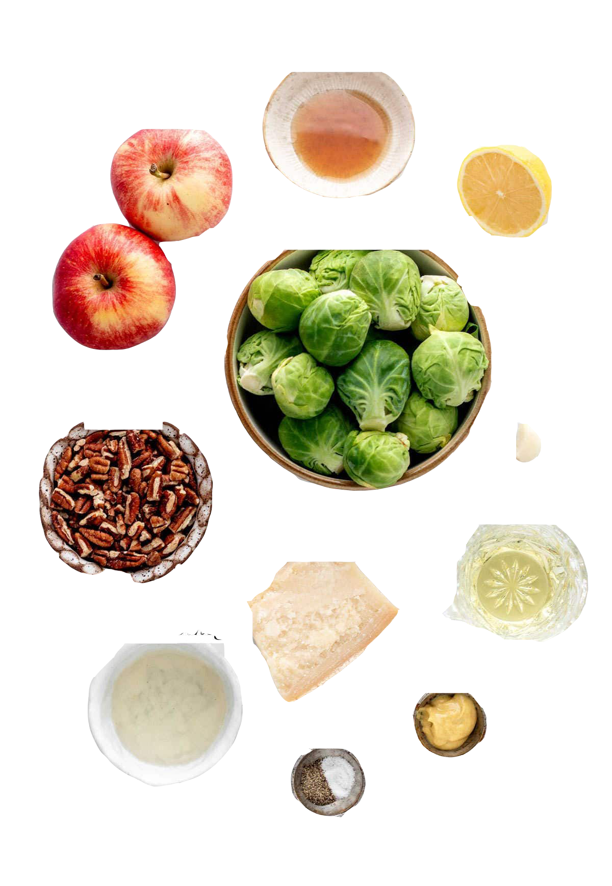

Ingredients
-

- 1.5 pounds Brussels sprouts, trimmed and halved
- 3 tablespoons olive oil
- Salt and pepper to taste
- 1 teaspoon garlic powder
- 1 tablespoon balsamic vinegar (optional)
- Grated Parmesan cheese (optional for serving)
- Fresh herbs (like thyme or rosemary) for garnish
Instructions
- Preheat the Oven: Preheat your oven to 425°F (220°C).
- Toss the Brussels Sprouts: In a large bowl, combine the Brussels sprouts with olive oil, salt, pepper, and garlic powder. Toss until well coated.
- Roast: Spread the Brussels sprouts in a single layer on a baking sheet. Roast for 20-25 minutes, stirring halfway through, until they are golden brown and crispy.
- Add Balsamic Vinegar: If using, drizzle balsamic vinegar over the sprouts in the last 5 minutes of roasting.
Serve: Remove from the oven, sprinkle with Parmesan cheese if desired, and garnish with fresh herbs before serving.